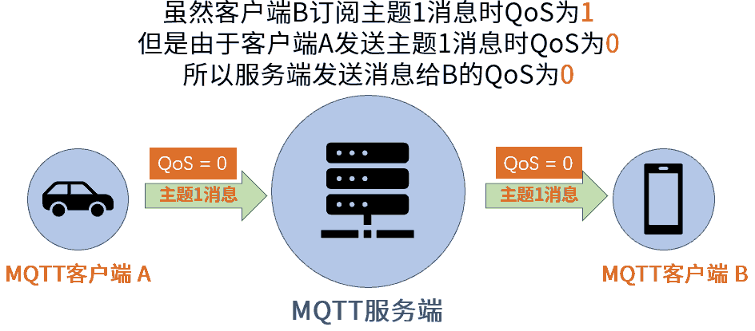

MQTT协议基础
概述
MQTT（Message Queuing Telemetry Transport，消息队列遥测传输协议），是一种基于发布/订阅（publish/subscribe）模式的"轻量级"通讯协议，该协议构建于TCP/IP协议上，由IBM在1999年发布。MQTT最大优点在于，可以以极少的代码和有限的带宽，为连接远程设备提供实时可靠的消息服务。作为一种低开销、低带宽占用的即时通讯协议，使其在物联网、小型设备、移动应用等方面有较广泛的应用。
2. 通信方式
MQTT基于客户端-服务器方式，以消息订阅/发布方式传输数据。先说一下几个概念：
MQTT协议中有三种身份：发布者（Publish）、代理（Broker）（服务器）、订阅者（Subscribe）。 代理Broker ：它就是MQTT的主体，实际上就是一个服务器，相当于整个MQTT的信息中转站，将发布者的信息转发给订阅者。在实际应用的过程中一般使用云服务器作为代理Broker. 发布者(Publish):顾名思义就是消息的发布者，它负责把消息通过（Publish）方式发送到Broker服务器上，剩下的它就不管了。 订阅者(Subscribe):订阅者则是消息接收方，当服务器接收到发布者发布的信息后，在服务器中查找如果发现有订阅者订阅了这条信息，那么服务器就把这条信息发送给订阅者。
那么这三者通过什么方式判断消息的区别那？那又引出来下一个概念主题（Topic）和负载（Payload）. Topic:可以理解为消息的类型，订阅者订阅（Subscribe）后，就会收到该主题的消息内容（payload） payload:可以理解为消息的内容，是指订阅者具体要使用的内容。
通俗上讲就是 ：发布者和订阅者约定好一个标题（主题topic）并且把这个标题存储在服务器上，发布者把消息内容（负载（Payload））发布到服务器这个标题下面，订阅者从服务器订阅这个标题。 当服务器发现这个标题下面有内容了就开始查找谁订阅这个标题，查找到了之后就把消息内容发送给订阅者 。
MQTT是什么
MQTT是一个客户端服务端架构的发布/订阅模式的消息传输协议。它的设计思想是轻巧、开放、简单、规范，易于实现。这些特点使得它对很多场景来说都是很好的选择，特别是对于受限的环境如机器与机器的通信（M2M）以及物联网环境（IoT）。
——MQTT协议规范中文版
以上MQTT（消息队列遥测传输）协议规范中的介绍很好地描述了MQTT的全部含义。它是一种很轻的通讯协议。与HTTP之类的协议相比，MQTT在通过网络传输数据时表现出众。该协议的另一个重要特点是易于在客户端实现。因此，MQTT成为了当今世界上最受欢迎的物联网协议。它已广泛应用于车联网、智能家居、即时聊天应用和工业互联网等领域。目前通过MQTT协议连接的设备已经过亿，这些都得益于MQTT 协议为设备提供了稳定、可靠、易用的通信基础。
MQTT历史
MQTT协议最初版本是在1999年建立的。该协议的发明人是的Andy Stanford-Clark和Arlen Nipper。
他们当时正在开发一个利用卫星通讯监控输油管道的项目。为了实现这个项目要求，他们需要开发一种用于嵌入式设备的通讯协议，这种通讯协议必须满足以下条件：
易于实现
数据传输的服务质量可控
占用带宽小
传输数据内容不可预知
设备连接状态可知
从以上几点不难看出，MQTT 从诞生之初就是专为低带宽、高延迟或不可靠的网络而设计的。虽然历经几十年的更新和变化，以上这些特点仍然是MQTT协议的核心特点。但是与最初不同的是，MQTT协议已经从嵌入式系统应用拓展到开放的物联网（IoT）领域。
MQTT版本
目前MQTT主流版本有两个，分别是MQTT3.1.1和MQTT5。MQTT3.1.1是在2014年10月发布的，而MQTT5是在2019年3月发布的。由于MQTT3.1.1与MQTT5的时间相差了将近五年，且MQTT5的发布时间距今不久，因此在本文书写时（2020年10月），MQTT3.1.1仍然主流版本。
MQTT5是在MQTT3.1.1的基础上进行了升级。因此MQTT5是完全兼容MQTT3.1.1的。而MQTT5是在MQTT3.1.1的基础上添加了更多的功能补充完善MQTT协议。
MQTT的基本工作原理
在上节课里我们了解了MQTT协议的背景知识和基本特点，这节课我们一起了解MQTT的基本工作原理。
在MQTT协议通讯中，有两个最为重要的角色。它们分别是服务端和客户端。首先我们来初步了解一下它们。
MQTT服务端
MQTT服务端通常是一台服务器。它是MQTT信息传输的枢纽，负责将MQTT客户端发送来的信息传递给MQTT客户端。MQTT服务端还负责管理MQTT客户端。确保客户端之间的通讯顺畅，保证MQTT消息得以正确接收和准确投递。
MQTT客户端
MQTT客户端可以向服务端发布信息，也可以从服务端收取信息。我们把客户端发送信息的行为成为“发布”信息。而客户端要想从服务端收取信息，则首先要向服务端“订阅”信息。“订阅”信息这一操作很像我们在视频网站订阅某一部电视剧。当这部电视剧上新后，视频网站会向订阅了该剧的用户发送信息，告诉他们有新剧上线了。
MQTT主题
刚刚我们在讲解MQTT客户端订阅信息时，使用了用户在视频网站订阅电视剧这个例子。在MQTT通讯中，客户端所订阅的肯定不是一部部电视剧，而是一个个“主题”。MQTT服务端在管理MQTT信息通讯时，就是使用“主题”来控制的。
为了便于您更好理解服务端是如何通过主题来控制客户端之间的信息通讯，我们来看看下图实例：
在以上图示中一共有三个MQTT客户端。它们分别是汽车，手机和电脑。MQTT服务端在管理MQTT通讯时使用了“主题”来对信息进行管理的。比如上图所示，假设我们需要利用手机和电脑获取汽车的速度，那么我们首先要利用电脑和手机向MQTT服务器订阅主题“汽车速度”。接下来，当汽车客户端向服务端的“汽车速度”主题发布信息后，服务端就会首先检查以下都有哪些客户端订阅了“汽车速度”这一主题的信息。当它发现订阅了该主题的客户端有一个手机和一个电脑，于是服务端就会将刚刚收到的“汽车速度”信息转发给订阅了该主题的手机和电脑客户端。
在以上实例中，汽车是“汽车速度”主题的发布者，而手机和电脑则是该主题的订阅者。
值得注意的是，MQTT客户端在通讯时，往往角色不是单一的。它既可以作为信息发布者也可以同时作为信息订阅者。如下图所示：
上图中的所有客户端都是围绕“空调温度”这一主题进行通讯的。对于“空调温度”这一主题，手机和电脑客户端成为了MQTT信息的发布者而汽车则成为了MQTT信息的订阅者（接收者）。
可以看到，针对不同的主题，MQTT客户端可以切换自己的角色。它们可能对主题A来说是信息发布者，但是对于主题B就成了信息订阅者。
MQTT 发布/订阅 特性
从以上实例我们可以看到，MQTT通讯的核心枢纽是MQTT服务端。有了服务端对MQTT信息的接收、储存、处理和发送，客户端在发布和订阅信息时，可以相互独立，且在空间上可以分离，时间上可以异步。这里所说的相互独立、空间和时间分离具体指的是什么呢？
相互可独立：MQTT客户端是一个个独立的个体。它们无需了解彼此的存在，依然可以实现信息交流。比如以上实例中汽车客户端在发布“汽车速度”信息时，汽车客户端本身可以完全不知道有多少个MQTT客户端订阅了“汽车速度”这一主题。而订阅了“汽车速度”主题的手机和电脑客户端也完全不知道彼此的存在。大家只要订阅了“汽车速度”主题，MQTT服务端就会在每次收到新信息时，将信息发送给订阅了“汽车速度”主题的客户端。
空间可分离：空间分离相对容易理解，MQTT客户端在通讯必要条件是连接到了同一个MQTT通讯网络。这个网络可以是互联网或者局域网。只要客户端联网，无论他们远在天边还是近在眼前，都可以实现彼此间的通讯交流。
时间可异步：MQTT客户端在发送和接收信息时无需同步。这一特点对物联网设备尤为重要。有时物联网设备会发生意外离线的情况。我们使用以上实例二的场景来作为示例。当我们的汽车在行驶过程中，可能会突然进入隧道，这时汽车可能会断开与MQTT服务端的连接。假设在此时我们的手机客户端向汽车客户端所订阅的“空调温度”主题发布了信息，而汽车恰恰不在线。这时，MQTT服务端可以将“空调温度”主题的新信息保存，待汽车再次上线后，服务端再将“空调温度”信息推送给汽车。
以上几点概括了MQTT通讯时客户端的相互关系以及服务端在其中所起的作用。讲到这里请您注意：以上总结的几个特点中都有一个“可”字。这个“可”字意味着客户端彼此之间可以独立，空间可以分离，时间可以异步。在我们实际应用中，客户端之间的关系既可以独立也可以相互依存。在空间上，既可以相距甚远，也可以彼此相邻。在时间上，既可以异步也可以同步。这个“可”字所体现的是MQTT通讯的灵活性。
可能有些朋友看过以上文字后感觉有些抽象。毕竟这些都是纯理论知识，在后面的教程里，我们将通过实例向您讲解MQTT的应用，届时相信您会对MQTT有深切的认识。到这里，请您务必留意MQTT通讯的三个特点，彼此可独立，空间可分离、时间可异步。
连接MQTT服务端
MQTT客户端之间要想实现通讯，必须要通过MQTT服务端。因此MQTT客户端无论是发布消息还是订阅消息，首先都要连接MQTT服务端。下面我们看一下MQTT客户端连接服务端的详细过程。
MQTT客户端连接服务端一共有两步。
首先MQTT客户端将会向服务端发送连接请求。该请求实际上是一个包含有连接请求信息的数据包。这个数据包的官方名称为CONNECT。
MQTT服务端收到客户端连接请求后，会向客户端发送连接确认。同样的，该确认也是一个数据包。这个数据包官方名称为CONNACK。
以上就是MQTT客户端在连接服务端的两步操作。接下来，我们一起来了解一下客户端在连接服务端时所发送的CONNECT报文内容。
CONNECT – 连接服务端
在上面的描述中我们看到。MQTT客户端要想连接服务端，首先要向服务端发送CONNECT报文。如果此CONNECT报文的格式或内容不符合MQTT规范，则服务器会拒绝客户端的连接请求。
下图是CONNECT报文所包含的信息内容。
在接下来的课程讲解中我们将会频繁接触到两个概念。第一个概念是报文，第二个概念是信息。
所谓报文就是一个MQTT数据包。这个数据包中可能包含有多个信息。比如以上图片就是描绘了一个CONNECT报文（数据包）的详细内容。
在这个CONNECT报文（数据包）中包含有多个信息。上图左侧栏中的内容是CONNECT报文所包含的信息名称。右侧是信息的具体内容。如上图示例中，此CONNECT报文包含有名称为clientId的信息，该信息的内容是”client-1″。当然，上图只是一个示例，不是所有的CONNECT报文中的clientId信息内容都是”client-1″。
另外也请注意，上图中有些信息名称旁边标注了“可选”字样，而有些则没有。那些没有标注“可选”字样的信息是必须包含在CONNECT报文中的。而对于标注了“可选”字样的信息，CONNECT报文既可以包含它们也可以没有它们。
考虑到我们刚刚开始接触MQTT协议，目前我们先从最基础的内容开始学起。那么在本节课程里，我们只讲解未标注“可选”字样的信息以及它们的功能。在后续的课程里，我们会详细讲解标有“可选”字样的信息。
clientId – 客户端ID
ClientId是MQTT客户端的标识。MQTT服务端用该标识来识别客户端。因此ClientId必须是独立的。如果两个MQTT客户端使用相同ClientId标识，服务端会把它们当成同一个客户端来处理。通常ClientId是由一串字符所构成的，如上图所示，此示例中的clientID是“client-1”。
cleanSession – 清除会话
所谓“清除会话”这一翻译源自MQTT官方文档中文版。要说明cleanSession的具体含义，首先要从MQTT网络环境讲起。
MQTT客户端与服务端的连接可能不是非常稳定，在不稳定的网络环境下，要想保证所有信息传输都能够做到准确无误，这是非常困难的。因此，我们就要根据客户端对系统运行的重要性来区别对待。
有些MQTT客户端对整个系统运行起着关键作用，这些客户端一定要准确无误的收到服务端发来的报文。比如一辆自动驾驶汽车的导航系统。假如这个导航系统错过了服务端发来的报文，可能会导致交通事故甚至人员伤亡。因此，即使网络不是非常稳定，我们仍然要求汽车导航系统一定要准确无误的收到服务端所发来的报文。
但是有些MQTT客户端对整个系统运行并不是很重要。比如同样是这辆自动驾驶汽车。它的音乐播放系统如果没有及时收到服务端发来的音乐播放报文，这对驾驶系统来说影响不大。
以上所举的两个例子说明，MQTT通讯中有些客户端必须准确无误的收到报文，有些则不需要。
为了保证重要的MQTT报文可以被客户端准确无误的收到。在服务端向客户端发送报文后，客户端会向服务端返回一个确认报文。如果服务端没有收到客户端返回的确认报文，那么服务端就会认为刚刚发送给客户端的报文没有被准确无误的送达。在这种情况下，服务端将会执行以下两个操作：
操作1：将尚未被客户端确认的报文保存起来
操作2：再次尝试向客户端发送报文，并且再次等待客户端发来确认信息。
讲到这里就要看看cleanSession的作用了。
如果cleanSession 被设置为“true”。那么服务端不需要客户端确认收到报文，也不会保存任何报文。在这种情况下，即使客户端错过了服务端发来的报文，也没办法让服务端再次发送报文。其实我们从字面上也很容易理解。cleanSession 的第一个词是clean。这个词的意思是clean（干净）的。服务端一旦发送完报文，就会把报文忘得“干干净净”了。
反过来，如果我们将cleanSession 设置为”false”。那么服务端就知道，后续通讯中，客户端可能会要求我保存没有收到的报文。
从以上的描述不难看出，如果某个客户端用于收发非常重要的信息（比如前文示例中汽车自动驾驶系统），那么该客户端在连接服务端时，应该将cleanSession设置为”false”。这样才能让服务端保存那些没有得到客户端接收确认的信息。以便服务端再次尝试将这些重要信息再次发送给客户端。
相反的，如果某个客户端用于收发不重要的信息（比如前文示例中车载音乐系统）那么该客户端在连接服务端时，应该将cleanSession设置为”true”。
请注意，如果需要服务端保存重要报文，光设置cleanSession 为false是不够的，还需要传递的MQTT信息QoS级别大于0。
关于QoS的概念，我们会在本教程后续课程中详细讲解。到目前请您务必牢记，如果想让服务器记住重要报文，那么客户端在连接服务端时，需要把cleanSession中设置为false。这一点非常关键，请务必牢记。
keepAlive – 心跳时间间隔
MQTT服务端运行过程中，当有客户端因为某种原因断开了与服务端的连接，服务端需要实时了解这一情况。KeepAlive （心跳时间间隔）正是用于服务端了解客户端连接情况的。不过关于KeepAlive （心跳时间间隔）目前讲解还为时过早，我们会在后续的课程中给您做详细介绍。目前您只需要记住，KeepAlive用于服务端实时了解客户端是否与其保持连接的情况。
以上就是CONNECT报文的主要内容。关于CONNECT报文中的其它内容，我们会在接下来的课程里给大家讲解。下面我们再看看MQTT服务端接收到客户端发来的连接请求后所回复的CONNACK报文详细内容。
CONNACK – 确认连接请求
下图是CONNACK报文所包含的信息内容。
CONNACK报文包括两个信息。一个是returnCode(连接返回码)，另一个是sessionPresent (当前会话)。以下是这两个信息的说明：
returnCode – 连接返回码
当服务端收到了客户端的连接请求后，会向客户端发送returnCode(连接返回码)，用以说明连接情况。如果客户端与服务端成功连接，则返回数字“0”。如果未能成功连接，连接返回码将会是一个非零的数值，具体这个数值的含义，请见下表：
返回码 |
返回码描述 |
0 |
成功连接 |
1 |
连接被服务端拒绝，原因是不支持客户端的MQTT协议版本 |
2 |
连接被服务端拒绝，原因是不支持客户端标识符的编码。 可能造成此原因的是客户端标识符编码是UTF-8，但是服务端不允许使用此编码。 |
3 |
连接被服务端拒绝，原因是服务端不可用。 即，网络连接已经建立，但MQTT服务不可用。 |
4 |
连接被服务端拒绝，原因是用户名或密码无效。 |
5 |
连接被服务端拒绝，原因是客户端未被授权连接到此服务端。 |
sessionPresent – 当前会话
要说明sessionPresent，首先我们要回顾一下CONNECT报文中的cleanSession – 清除会话。
我们还用自动驾驶汽车为例。对于自动驾驶汽车来说，自动导航系统属于非常重要的MQTT客户端。服务端发送给导航系统的报文必须要准确无误的送达。相反，音乐播放系统就不那么重要了。即使音乐播放系统错过服务端发送的报文也没有关系。
对于不重要的MQTT客户端，它们在向服务器发送连接请求时，CONNECT报文中的cleanSession通常设置为true。原因是这类不重要的MQTT客户端即使丢失信息也不会影响整体系统运行。因此服务端在看到客户端的cleanSession为true时，就不会保存发送给它们的信息。
然而对于汽车导航系统这类重要的MQTT客户端来说。当它在连接服务端时，cleanSession肯定时设置为false。原因是重要客户端需要服务端确保信息发送准确无误。如果服务端发现发送给重要客户端的信息没有得到确认，会将报文进行保存。
当重要客户端连接服务端时，服务端可能保存着没有得到确认的报文。如果是这样的话，那么客户端在连接服务端时，就会通过sessionPresent来了解服务端是否有之前未能确认的信息。
下面我们分几种情况来讲述sessionPresent的作用。
首先，当客户端发送的CONNECT报文中的cleanSession设置为true。在这种情况下，客户端是不需要服务端保存任何报文的。那么服务端发送的确认连接CONNACK报文中，sessionPresent肯定是false，也就是说，服务端没有保存任何报文。
当客户端发送的CONNECT报文中的cleanSession设置为false时，客户端是要求服务端保存报文的。在这种情况下，如果服务端的确保存了没有收到客户端接收确认的报文信息，那么cleanSession为true，否则为false。
简言之，CONNACK报文的sessionPresent与CONNECT报文的cleanSession相互配合。其作用是客户端发送连接请求时，服务端告知客户端有没有保存报文信息。这个被服务端保存的报文信息是来自于上一次客户端连接时，服务端曾经发送此报文给客户端，但是发送后没有收到客户端接收确认。
发布、订阅和取消订阅
学习客户端如何实现发布消息、订阅主题以及取消订阅主题。在本节课里我们将重点讲解以下MQTT报文：
* PUBLISH – 发布信息 * SUBSCRIBE – 订阅主题 * SUBACK – 订阅确认 * UNSUBSCRIBE – 取消订阅
PUBLISH – 发布消息
MQTT客户端一旦连接到服务端，便可以发布消息。 每条发布的MQTT消息必须包含一个主题。MQTT服务器可以通过主题确定将消息转发给哪些客户端。（注：这里的消息指的是MQTT报文。）
MQTT客户端发布消息时，会向服务端发送PUBLISH报文。以下是PUBLISH报文的详细信息。
上图左侧栏中的内容是PUBLISH报文所包含的信息名称。右侧是信息的具体内容。
topicName – 主题名
主题名用于识别此信息应发布到哪一个主题。关于MQTT主题的应用，我们在之前的课程中已经做了详细介绍，在后续课程中我们还会对主题的高级应用进行更加详细的讲解。
QoS – 服务质量等级
QoS（Quality of Service）表示MQTT消息的服务质量等级。QoS有三个级别：0、1和2。QoS决定MQTT通讯有什么样的服务保证。有关QoS的详细信息我们会在后续课程中详细讲解。
packetId – 报文标识符
报文标识符可用于对MQTT报文进行标识。不同的MQTT报文所拥有的标识符不同。MQTT设备可以通过该标识符对MQTT报文进行甄别和管理。请注意：报文标识符的内容与QoS级别有密不可分的关系。只有QoS级别大于0时，报文标识符才是非零数值。如果QoS等于0，报文标识符为0。
retainFlag – 保留标志
在默认情况下，当客户端订阅了某一主题后，并不会马上接收到该主题的信息。只有在客户端订阅该主题后，服务端接收到该主题的新信息时，服务端才会将最新接收到的该主题信息推送给客户端。
但是在有些情况下，我们需要客户端在订阅了某一主题后马上接收到一条该主题的信息。这时候就需要用到保留标志这一信息。关于保留标志的具体使用方法，我们将在本教程的后续部分进行详细讲解。
Payload – 有效载荷
有效載荷是我们希望通过MQTT所发送的实际内容。我们可以使用MQTT协议发送文本，图像等格式的内容。这些内容都是通过有效載荷所发送的。
dupFlag – 重发标志
当MQTT报文的接收方没有及时确认收到报文时，发送方会重复发送MQTT报文。在重复发送MQTT报文时，发送方会将此“重发标志”设置为true。请注意，重发标志只在QoS级别大于0时使用。有关QoS的详细信息，我们将会在后续教程中为您做详细介绍。
SUBSCRIBE – 订阅主题
当客户端连接到服务端后，除了可以发布消息，也可以接收消息。我们在之前的课程讲过，所有MQTT消息都有主题。客户端要想接收消息，首先要订阅该消息的主题。这样，当有客户端向该主题发布消息后，订阅了该主题的客户端就能接收到消息了。
客户端要想订阅主题，首先要向服务端发送主题订阅请求。客户端是通过向服务端发送SUBSCRIBE报文来实现这一请求的。该报文包含有一系列“订阅主题名”。请留意，一个SUBSCRIBE报文可以包含有单个或者多个订阅主题名。也就是说，一个SUBSCRIBE报文可以用于订阅一个或者多个主题。
在以上PUBLISH报文讲解中，我们曾经提到过QoS（服务质量等级）这一概念。同样的，客户端在订阅主题时也可以明确QoS。服务端会根据SUBSCRIBE中的QoS来提供相应的服务保证。
另外每一个SUBSCRIBE报文还包含有“报文标识符”。报文标识符可用于对MQTT报文进行标识。不同的MQTT报文所拥有的标识符不同。MQTT设备可以通过该标识符对MQTT报文进行甄别和管理。
SUBACK – 订阅确认
服务端接收到客户端的订阅报文后，会向客户端发送SUBACK报文确认订阅。
SUBACK报文包含有“订阅返回码”和“报文标识符”这两个信息。
returnCode – 订阅返回码
客户端向服务端发送订阅请求后，服务端会给客户端返回一个订阅返回码。
在之前的讲解中我们说过，客户端可通过一个SUBSCRIBE报文发送多个主题的订阅请求。服务端会针对SUBSCRIBE报文中的所有订阅主题来逐一回复给客户端一个返回码。
这个返回码的作用是告知客户端是否成功订阅了主题。以下是返回码的详细说明。
返回码 |
Return Code Response |
0 |
订阅成功 – QoS 0 |
1 |
订阅成功- QoS 1 |
2 |
订阅成功- QoS 2 |
128 |
订阅失败 |
请留意，如上表所示，针对不同的主题订阅QoS，服务端的返回码会有所不同。
另外每一个SUBACK报文也包含有“报文标识符”。MQTT设备可以通过该标识符对报文进行管理。
UNSUBSCRIBE – 取消订阅
顾名思义，当客户端要取消订阅某主题时，可通过向服务端发送UNSUBSCRIBE – 取消订阅报文来实现。
MQTT服务端收到客户端连接请求后，会向客户端发送连接确认。同样的，该确认也是一个数据包。这个数据包官方名称为CONNACK。
以上示意图显示，UNSUBSCRIBE报文包含两个重要信息，第一个是取消订阅的主题名称。同一个UNSUBSCRIBE报文可以同时包含多个取消订阅的主题名称。另外，UNSUBSCRIBE报文也包含“报文标识符”，MQTT设备可以通过该标识符对报文进行管理。
当服务端接收到UNSUBSCRIBE报文后，会向客户端发送取消订阅确认报文 – UNSUBACK报文。该报文含有客户端所发送的“取消订阅报文标识符”。
客户端接收到UNSUBACK报文后就可以确认取消主题订阅已经成功完成了。
MQTT主题进阶
通过以前的学习，我们了解到主题是MQTT的核心概念之一。在本节课里，我们来一起进一步了解MQTT主题这一概念。我们将从以下几个方面来学习MQTT主题的高级知识：
1. 主题基本形式 2. 主题分级 3. 主题通配符 4. 主题应用注意事项
1. 主题基本形式
主题的最基本形式就是一个字符串。以下是几个主题示例：
myTopic
motorSpeed
MotorSpeed
current time
虽然主题看起来很简单，但是我们在使用主题时需要注意以下几点：
主题是区分大小写的。如上列表中的主题 motor_speed和Motor_speed是两个完全不同的主题。
主题可以使用空格 如以上列表中的current time，虽然有空格分隔current和time这两个词，但这实际是一个MQTT主题。不过，虽然我们可以使用空格，但是笔者强烈建议您不要在主题中使用空格。我们在开发时一不小心，可能就会漏掉空格，这将造成不必要的麻烦。
大部分MQTT服务端是不支持中文主题的，所以我们应使用英文字符或ASCII字符来作为MQTT主题。
2. 主题分级
MQTT主题可以是一个简单的字符串，比如motor_speed，myTopic。这些都是单一级别的主题。
为了更好的对主题进行管理和分类，我们可以对主题进行分级处理。MQTT主题各个级别之间可以使用”/”来分隔。如下例所示：
Tyler-1/motor/1/speed
在以上示例中一共有四级主题，分别是第1级 Tyler-1、第2级motor、第三级1、第4级speed。主题的每一级至少需要一个字符，比如以上示例中，数字1既是一级主题。
我们再来看几个分级主题的示例：
home/sensor/kitchen/temperature home/sensor/kitchen/brightness home/sensor/bedroom/temperature home/sensor/bedroom/brightness
3 主题通配符
当客户端订阅主题时，可以使用通配符同时订阅多个主题。通配符只能在订阅主题时使用，下面我们将介绍两种通配符：单级通配符和多级通配符。
单级通配符: +
顾名思义，单级通配符可以代替一个主题级别。 以下为含有单极通配符的主题示例。
home/sensor/+/temperature
当客户端订阅了以上主题后，它将会收到以下主题的信息内容：
home/sensor/kitchen/temperature home/sensor/bedroom/temperature
我们可以看到，在home后面的级别中，由于客户端订阅的主题使用了+ 单级通配符，因此无论home级别后面的内容是什么，客户端都能收到这些主题的信息。
相反，客户端将无法收到以下主题的信息。
home/sensor/bedroom/brightness office/sensor/bedroom//temperature home/screen/livingroom/temperature
以上主题的红色部分都是客户端无法收到信息的原因。这些红色的部分都是与客户端订阅的主题“home/sensor/+/temperature”不相符的部分。
多级通配符 #
单级通配符仅可代替一个主题级别，而多级通配符”#”可以涵盖任意数量的主题级别。如下示例所示， 多级通配符必须是主题中的最后一个字符。
home/sensor/#
当客户端订阅了以上含有”#”的主题后，可以收到以下主题的信息。
home/sensor/kitchen/temperature home/sensor/bedroom/brightness home/sensor/data
多级通配符可以代替多级主题信息，因此无论”home/sensor”后面有一级还是多级主题，都可以被订阅了”home/sensor/#”的客户端接收到。
4. 主题应用注意事项
– 以$开始的主题
以$开始的主题是MQTT服务端系统保留的特殊主题，我们不能随意订阅或者向其发布信息。以下是此类主题的示例：
$SYS/broker/clients/connected $SYS/broker/clients/disconnected $SYS/broker/clients/total $SYS/broker/messages/sent $SYS/broker/uptime
类似的主题还有很多。不过请记住一点，以$符号开头的主题是系统保留的特殊主题，我们不能随意订阅或者向其发布信息。
– 不要用 “/” 作为主题开头 MQTT允许使用“/”作为主题的开头，例如/home/sensor/data。但是这将这么做毫无意义，而且会额外产生一个没有用处的主题级别。所以我们应避免使用/作为主题的开头。
– 主题中不要使用空格 MQTT协议允许我们在主题中使用空格，但是阅读和调试含有空格的主题会显得异常困难。所以我们尽量不要在主题中使用空格或者特殊字符。
– 保持主题简洁明了 MQTT是一种轻量级的通讯协议，它常用于网络带宽受限的环境，因此我们应尽量让主题简洁明了，从而让设备间交互的内容更加简洁，以更好的适应网络带宽受限的环境。
– 主题中尽量使用ASCII字符 虽然很多MQTT设备支持UTF-8字符作为MQTT主题，但是笔者建议您在主题中尽量使用ASCII字符。
在主题中嵌入客户端ID 在主题中嵌入发布消息的客户端ID，这一操作可以为开发和管理MQTT信息提供便利。通过主题中的客户端ID内容，我们可以很容易的了解该主题信息是由哪一台设备所发布的。
QoS 服务质量等级
什么是服务质量？
在之前的课程里我们提到过，一个物联网系统中有些信息非常重要，我们需要确保这类重要信息可以准确无误的发送和接收，而有些信息则相对不那么重要，这类信息如果在传输中丢失不会影响系统的运行。
MQTT服务质量(Quality of Service 缩写 QoS)正是用于告知物联网系统，哪些信息是重要信息需要准确无误的传输，而哪些信息不那么重要，即使丢失也没有问题。
MQTT协议有三种服务质量级别：
QoS = 0 – 最多发一次 QoS = 1 – 最少发一次 QoS = 2 – 保证收一次
以上三种不同的服务质量级别意味着不同的MQTT传输流程。对于较为重要的MQTT消息，我们通常会选择QoS>0的服务级别（即QoS 为1或2）。
另外这里提到的“发”与“收”有两种可能。一种是客户端发布消息时，将消息发送给服务端。一种是客户端订阅了某一主题消息后，服务端将消息发送给客户端。因此发布消息和接收消息的可能是服务端也可能是客户端。
为了避免为您造成混淆，我们在本节教程后面的描述中将使用“发送端”来描述发送MQTT消息的设备，而使用“接收端”来描述接收MQTT消息的设备。
接下来我们仔细看一下这三种服务质量级别的具体含义。
QoS = 0 – 最多发一次
0是服务质量QoS的最低级别。当QoS为0级时，MQTT协议并不保证所有信息都能得以传输。也就是说，QoS=0的情况下，MQTT服务端和客户端不会对消息传输是否成功进行确认和检查。消息能否成功传输全看网络环境是否稳定。
也就是说，在QoS为0时。发送端一旦发送完消息后，就完成任务了。发送端不会检查发出的消息能否被正确接收到。
在网络环境稳定的情况下，信息传输一般是不会出现问题的。但是在环境不稳定的情况下，可能会在传输过程中出现MQTT消息丢失的情况。
QoS = 1 – 最少发一次
当QoS级别为1时，发送端在消息发送完成后，会检查接收端是否已经成功接收到了消息。但是发送端是如何实现这一检查的呢？请看下图：

发送端将消息发送给接收端后，会等待接收端的确认。接收端成功接收消息后，会发送一条确认报文PUBACK给发送端。如果发送端收到了这条PUBACK确认报文，那么它就知道消息已经成功接收。
假如过了一段时间后，发送端没有收到PUBACK报文，那么发送端会再次发送消息，然后再次等待接收端的PUBACK确认报文。因此，当QoS=1时，发送端在没有收到接收端的PUBACK确认报文以前，会重复发送同一条消息。
所以QoS = 1时，每一条消息都至少传输一次。
另外请您回忆一下PUBLISH报文的内容。
当发送端重复发送一条消息时，PUBLISH报文中的dupFlag会被设置为True（如上图黑色横线所标注的部分）。这是为了告诉接收端，此消息为重复发送的消息。
QoS = 2 – 保证收一次
MQTT服务质量最高级是2级，即QoS = 2。当MQTT服务质量为2级时，MQTT协议可以确保接收端只接收一次消息。
如下图所示，QoS=2的收发相对更加复杂。发送端需要接收端进行两次消息确认。因此，2级MQTT服务质量是最安全的服务级别，也是最慢的服务级别。
下面我们来分步看一下Q0S=2时的消息发送和接收基本流程。

接收端收到QoS为2的消息后，会返回PUBREC报文作为应答。

发送端收到PUBREC报文后，会把此报文进行存储，并且返回PUBREL报文作为应答。
当接收端收到PUBREL报文后，会应答发送端一条PUBCOMP报文。至此，一次QoS2的MQTT消息传输就结束了。
以上是QoS=2时的MQTT通讯基本过程。这里我们只给您列出了基本流程，而没有过多的讲解MQTT协议是如何控制接收端只接收一次消息。这么做是因为本教程的重点是MQTT应用。关于QoS=2的MQTT服务端内部控制机制，我们在实际开发MQTT物联网的过程中是不会涉及到的。
所以您只需要牢记一点，那就是QoS=2可以保证接收端只收一次消息。
设置QoS
了解了QoS的含义后，我们该如何在MQTT通讯中设置QoS呢？下面我们来分别讲解客户端在发布消息和订阅消息时如何设置QoS。
发布消息
如下图所示，客户端发布信息时，PUBLISH数据包中专有一个信息为qos。该信息正是用于设置客户端发布MQTT消息的QoS等级。

订阅消息
同样的，在客户端订阅MQTT主题时，SUBSCRIBE数据包中也同样有一个信息用于设置订阅主题的QoS级别。客户端正是通过该主题来设置订阅主题的QoS级别的。
换句话说，无论是发布(PUBLISH)还是订阅（SUBSCRIBE），都可以使用数据包中的qos消息设置服务质量级别。
接收端连接服务端
另外，要想实现QoS>0的MQTT通讯，客户端在连接服务端时必须要将cleanSession设置为false。如果这一步没有实现，那么客户端是无法实现QoS>0的MQTT通讯。这一点非常关键，请您务必要留意。
服务质量降级
讲到这里，不知道有没有朋友会感到好奇。假如客户端在发布和订阅信息时使用不同级别的QoS，将会发生什么情况呢。如下图所示，假如客户端A发布到主题1的消息是采用QoS = 2，然而客户端B订阅主题1采用QoS = 1。那么服务端该如何来应对这一情况呢？

在这种情况下，服务端会使用较低级别来提供服务。如下图所示，虽然A发送到主题1的消息采用QoS为2，但是服务端发送主题1的消息给B时，采用的QoS为1。这是因为B在订阅主题1时采用的QoS为1。
下面我们再来看一种情况。
如下图所示，假如客户端A发布主题1消息时使用QoS为0，而客户端B订阅主题1消息时使用QoS为1。
在这种情况下，虽然客户端B订阅主题1消息时QoS为1，但是由于客户端A发送主题1消息时QoS为0，所以服务端发送消息给B的QoS为0。

通过以上两个示例我们可以看到。对于发布和订阅消息的客户端，服务端会主动采用较低级别的QoS来实现消息传输。
QoS=1通讯时的注意事项
如想在MQTT通讯中实现服务质量等级为1级（QoS=1），我们要分别对消息的发布端课接收端进行相应的设置。以下列表中的内容是具体需要采取的措施。
接收端连接服务端时cleanSession设置为false
接收端订阅主题时QoS=1
发布端发布消息时QoS=1
QoS=2通讯时的注意事项
如想在MQTT通讯中实现服务质量等级为2级（QoS=2），我们要分别对消息的发布端和接收端进行相应的设置。以下列表中的内容是具体需要采取的措施。
接收端连接服务端时cleanSession设置为false
接收端订阅主题时QoS=2
发布端发布消息时QoS=2
小结
若想实现QoS>0，订阅端连接服务端时cleanSession需要设置为false，订阅端订阅主题时QoS>0，发布端发布消息时的QoS>0。
服务端会选择发布消息和订阅消息中较低的QoS来实现消息传输，这也被称作“服务降级”。
QoS = 0, 占用的网络资源最低，但是接收端可能会出现无法接收消息的情况，所以适用于传输重要性较低的信息。
QoS = 1, MQTT会确保接收端能够接收到消息，但是有可能出现接收端反复接收同一消息的情况。
QoS = 2, MQTT会确保接收端只接收到一次消息。但是QoS为2时消息传输最慢，另外消息传输需要多次确认，因此所占用的网络资源也是最多的。此类服务等级适用于重要消息传输。
由于QoS1和QoS2都能确保客户端接收到消息，但是QoS1所占用的资源较QoS2占用资源更小。因此建议使用QoS1来实现网络资源较为珍贵的环境下传输重要信息。
保留消息
“保留消息”是十分重要的MQTT概念。通过“保留消息”这一名称不难判断，“保留消息”是一种被保留下来的消息。但是这个“保留消息”为何要被保留？而保留消息又是有什么特殊的用途？这些答案我们将在本节课揭晓。
保留消息的作用
要讲明“保留消息”这一概念，我们先看一个场景。假设我们正在利用MQTT协议开发一套智能家居物联网系统。在该系统中有一台专门用于检测和发布室温信息的MQTT客户端，它每到整点时就会测量当前室温并且向MQTT服务端发布室温测量结果。
假设在该智能家具物联网系统中，还有一台环境信息显示客户端。这台客户端的作用就是把当前的室温显示在屏幕上以便我们实时了解室内温度。换句话说，这台环境信息显示客户端一启动就会订阅室温主题，这样室温检测客户端一发布消息，显示客户端就能获取到最新的温度消息并显示在屏幕上了。
假设某天上午7：00，我们的室温检测客户端将最新的室温消息发布到了服务端，那么订阅了室温消息的显示客户端也就马上获取到室温消息并且显示在屏幕上。
然而在7：10的时候，家里的小狗不小心把显示客户端的电源碰掉了，显示客户端没有电也就自动关机了。我们发现这一问题后，马上把显示客户端重新通电，客户端通电启动后会立刻订阅室温主题。
但这时候问题出现了，室温测量客户端每到整点才发布一次温度信息。上一次发布时间是7：00，下一次发布时间是8：00。所以，尽管显示客户端订阅了室温主题，它还要等到8：00钟才能收到最新室温消息。在8：00前的几十分钟里，显示客户端无法获知当前室温信息，也就无法将室温信息显示在屏幕上供我们查阅。
为了避免以上情况出现，我们可以让室温测量客户端在每次向室温主题发布消息时都使用“保留消息”这一模式将温度信息发布到服务端。这样无论显示客户端在任何时间订阅室温主题，都会马上收到该主题中的“保留消息”，也就是温度测量客户端发布的最新室温消息。
发布保留消息的方法
MQTT设备发布的保留消息的流程与发布普通消息的流程十分类似。唯一区别是，在发布保留消息时，MQTT设备需要将PUBLISH报文中retainFlag设置为true（如上图所示）。
当然，如果要发布非保留消息，那么PUBLISH报文中retainFlag设置为false。
修改保留消息的方法
每一个主题只能有一个“保留消息”，如果客户端想要更新“保留消息”，就需要向该主题发送一条新的“保留消息”，这样服务端会将新的“保留消息”覆盖旧的“保留消息”。当有客户端订阅该主题时，服务端就会将最新的“保留消息”发送给订阅客户端了。
删除保留消息的方法
如果要删除主题的“保留消息”，可以通过向该主题发布一条空的“保留消息”，也就是发送一条0字节payload的“保留消息”
心跳机制
在医院里，医生利用心跳来判断患者是否还有生命体征。对于MQTT服务器来说，它要判断一台MQTT客户端是否依然保持连接可以检查这台客户端是不是经常发送消息给服务端。如果经常收到客户端的消息，那么没问题，这个客户端肯定在线。
但是有些客户端并不经常发送消息给服务端。对于这种客户端，服务端可以使用类似心跳检测的方法，来判断客户端是否在线。
不过客户端设备没有心脏，自然不会跳动。可是我们可以为它们配上一个类似心脏的机制，这个心脏机制就是让客户端在没有向服务端发送信息时，可以定时向服务端发送一条消息。这条用于心跳机制的消息也被称作心跳请求（PINGREQ）。心跳请求的作用正是用于告知服务端，当前客户端依然在线。服务端在收到客户端的心跳请求后，会回复一条消息。这条回复消息被称作心跳响应（PINGRESP）。

由于心跳请求是客户端定时发送的，一旦服务端发现客户端停止发送请求信息，那么服务端就会知道，这台客户端已经断开了连接。
这个心跳机制不仅可以用于服务端判断客户端是否保持连接，也可以用于客户端判断自己与服务端是否保持连接。如果客户端在发送心跳请求（PINGREQ）后，没有收到服务端的心跳响应（PINGRESP），那么客户端就会认为自己与服务端的连接已经被断开了。
以上是心跳机制(Keep Alive)的简单介绍，为了更深入的了解心跳机制，我们接下来回忆一下MQTT客户端在连接服务端的过程。请见下图，客户端连接服务端时会像服务端发送CONNECT报文

我刚刚给大家讲过，在心跳机制中，客户端要定时向服务端发送心跳请求(PINGREQ)报文。那么客户端发送心跳请求的时间间隔是多少呢？
这个心跳时间间隔是我们在开发客户端时进行设置的。假如我们使用ESP8266开发板作为物联网客户端，那么我们在编写控制程序时，会在程序中对心跳时间间隔进行设置。
设置好心跳时间间隔后，客户端就知道多久要发送一条心跳请求给服务端。但是这里存在一个问题。光是客户端知道心跳时间间隔还不够，服务端也需要知道客户端的心跳时间间隔，这样服务端才能定时检查客户端的心跳请求消息。
因此，在客户端连接服务端时，会将心跳时间间隔信息放入CONNECT报文。也就是上图中最后一行的信息keepAlive。这个keepAlive正是用于告知服务端心跳时间间隔的。
以上示例图中我们看到keepAlive数值为60。这就意味着，客户端的心跳间隔时间是60秒。
接下来我要给您讲解的内容十分关键，请您务必留意。
在继续后面的学习以前我们先来问您个问题。假如客户端的心跳间隔时间是60秒，那么服务端是不是每隔60秒就检查一次客户端是否发来心跳请求呢？
我们本节课刚开始的时候曾给大家介绍过，如果客户端在心跳时间间隔内发布了消息给服务端，那么服务端不需要客户端发送心跳请求也可以确定该客户端肯定在线。
但是当客户端在心跳间隔内没有发布消息给服务端，这时客户端会主动发送一个心跳请求消息给服务端。以表明自己仍然在线
简而言之，客户端在心跳间隔时间内，如果有消息发布，那就直接发布消息而不发布心跳请求，但是在心跳间隔时间内，客户端没有消息发布，那么它就会发布一条心跳请求给服务端，这个心跳请求的目的就是为了告诉服务端，我还在线，你放心吧。
另外，在实际运行中，如果服务端没有在1.5倍心跳时间间隔内收到客户端发布消息(PUBLISH)或发来心跳请求(PINGREQ)，那么服务端就会认为这个客户端已经掉线。
举例来说，如果心跳时间间隔是60秒。那么服务端在90秒内没有收到客户端发布的消息也没有收到PINGREQ请求，那么它就会认为客户端已经掉线。
另外，心跳机制不仅仅用于服务端判断客户端是否在线。客户端也可以利用这一机制来判断自己是否与服务端仍保持连接。如果客户端发送了心跳请求(PINGREQ)给服务端一段时间后，仍然没有收到服务端回复的心跳确认。那么客户端也会认为自己已经断开了与服务端的连接。
了解了MQTT心跳机制后，不知道您有没有想过，如果服务端知道了某一台客户端已经掉线，它会采取什么措施吗？要想直到这个问题答案，请您继续我们下一节课的学习。
MQTT遗嘱
在之前的课程里，我们学习了MQTT协议的心跳机制。该机制可以让服务端随时掌握客户端连接情况。当客户端“心跳”正常时，服务端即知道客户端仍然在线（活着）。当心跳一旦停止，服务端就会发现该客户端已经断线（死亡）。
为了让客户端可以更好的发挥作用，便于服务端管理，MQTT协议允许客户端在“活着”的时候就写好遗嘱，这样一旦客户端意外断线，服务端就可以将客户端的遗嘱公之于众。
请注意，在上面的这段话中，我将意外断线这几个字特意做了标注，这是因为，客户端的遗嘱只在意外断线时才会发布，如果客户端正常的断开了与服务端的连接，这个遗嘱机制是不会启动的，服务端也不会将客户端的遗嘱公布。
那么什么是意外断线呢？
当客户端正常断开连接时，会向服务端发送DISCONNECT报文，服务端接收到该报文后，就知道，客户端是正常断开连接，而并非意外断开连接。
然而，当服务端在没有收到DISCONNECT报文的情况下，发现客户端“心跳”停止了，这时服务端就知道客户端是意外断线了。
那究竟是什么原因会导致客户端意外断线呢？我们知道MQTT协议作为物联网协议可能用于不稳定的网络环境，假如客户端的网络信号突然出现问题，就会导致了意外断线。
另外，有些客户端设备使用电池供电，当电池没电时，也会出现意外断网的情况。当然，造成意外断网的情况还有很多，以上是较为常见的情况。
通过以上讲解，我们了解了客户端遗嘱的作用，接下来我们仔细看一下关于客户端遗嘱的几个重要话题：
客户端如何将遗嘱消息发送给服务端
MQTT遗嘱使用建议
1. 客户端如何将遗嘱消息发送给服务端
在之前的课程里我为大家讲解了MQTT客户端是如何连接服务端的。
MQTT客户端要想连接服务端，首先要向服务端发送CONNECT报文。下图是CONNECT报文所包含的信息内容。
在上图的CONNECT报文中，我特意使用红色对一系列信息进行了标注。客户端正是在连接服务端时，利用这一系列信息将遗嘱消息发送给服务端。下面我们来分别看一下这些信息的作用。
lastWillTopic – 遗嘱主题
遗嘱消息和普通MQTT消息很相似，也有主题和正文内容。lastWillTopic的作用正是告知服务端，本客户端的遗嘱主题是什么。只有那些订阅了这一遗嘱主题的客户端才会收到本客户端的遗嘱消息。
以上图为例，此遗嘱主题为”hans/will”。也就是说，只有订阅了主题”hans/will”的客户端，才会收到这台客户端的遗嘱消息。
lastWillMessage – 遗嘱消息
遗嘱消息定义了遗嘱消息内容。在本示例中，那些订阅了主题”hans/will”的客户端会在客户端意外断线时，收到服务端发布的“unexpected exit”。
lastWillQoS – 遗嘱QoS
在之前的课程里，我们学习了服务质量的概念。对于遗嘱消息来说，同样可以使用服务质量来控制遗嘱消息的传递和接收。这里的服务质量与普通MQTT消息的服务质量是一样的概念。也可以设置为0、1、2。对于不同的服务质量级别，服务端会使用不同的服务质量来发布遗嘱消息。
lastWillRetain – 遗嘱保留
遗嘱消息也可以设置为保留消息，关于保留消息的具体内容，我们在之前的课程中曾经学习过。遗嘱保留用于设置遗嘱消息是否需要进行保留处理。服务端会根据此处内容，对遗嘱消息进行相应的保留与否处理。
MQTT遗嘱操作建议
在使用MQTT遗嘱时，我们建议您通过以下方法让设备的MQTT遗嘱机制可以更好的发挥作用。
假设我们现在有一台MQTT客户端。它的client id是 client-1。它的遗嘱主题是“client-1-will”
1. 当client-1连接服务端时，CONNECT报文中的遗嘱消息是“offline”。并且它的遗嘱保留设置为true。
2. 当client-1成功连接服务端后，立即向遗嘱主题“client-1-will”发布一条消息“online”。同时在发布此消息时，保留标志设置为true。这样，只要client-1在线，那么任何设备一订阅“client-1-will”就能收到设备在线的消息“online”。
3. 如果client-1发生意外离线。那么任何设备一订阅“client-1-will”就会收到设备离线的消息”offline”。
4. 如果client-1恢复连接，那么它会将遗嘱主题“client-1-will”的保留消息更改为“online”，这样任何设备一订阅“client-1-will”就能收到设备在线的消息“online”。
MQTT用户密码认证
在之前的课程里我曾给大家讲解了MQTT客户端连接服务端的基本过程。客户端通过CONNECT报文，向服务端发起连接请求。CONNECT报文所包含的具体信息内容如下：
到目前为止，我们已经将CONNECT报文中的信息大部分讲解完毕了，目前只剩下上图中红色方框所标注的username(用户名)和password（密码）。这里的用户名和密码是用于客户端连接服务端时进行认证需要的。
有些MQTT服务端需要客户端在连接时提供用户名和密码。只有客户端正确提供了用户名和密码后，才能连接服务端。否则服务端将会拒绝客户端连接，那么客户端也就无法发布和订阅消息了。
请注意，username(用户名)和password（密码）是可选的CONNECT信息。也就是说，有些服务端开启了客户端用户密码认证，这种服务端需要客户端在连接时正确提供认证信息才能连接。当然，那些没有开启用户密码认证的服务端无需客户端提供用户名和密码认证信息。
在以上示例中，我们看到此CONNECT报文中所包含的用户名是“hans”，密码是“letmein”。
用户名和密码除了有以上功能外，有些公用MQTT服务端也利用此信息来识别客户端属于哪一个用户，从而对客户端进行管理。比如用户可以拥有私人主题，这些主题只有该用户可以发布和订阅。对于私人主题，服务端就可以利用客户端连接时的用户名和密码来判断该客户端是否有发布订阅该用户私人主题的权限。
公用MQTT服务器列表
然也物联 (国内)
官网地址：http://www.ranye-iot.net MQTT服务器地址：test.ranye-iot.net TCP 端口：1883 TCP/TLS 端口：8883
Mosquitto (国外)
官网地址：http://www.mosquitto.org MQTT服务器地址：test.mosquitto.org TCP 端口：1883 TCP/TLS 端口：8883 WebSockets 端口：8080 Websocket/TLS 端口：8081
HiveMQ (国外)
官网地址：https://www.hivemq.com MQTT服务器地址：broker.hivemq.com TCP 端口：1883 WebSockets 端口：8000